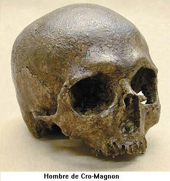

Europa ha visto en dos oportunidades la llegada de humanos. La primera ocurrió aproximadamente hace 800.000 años cuando llegaron los ancestros de los Homo heidelbergensis (ancestros a su vez de los neandertales) y por segunda oportunidad hace 45.000 años, cuando llegaron miembros de la especie humana actual (Homo sapiens). Los humanos modernos que convivieron con los neandertales por más de 10.000 años recibieron el nombre de “Hombre de Cro-Magnon” gracias a una cueva francesa en la que se hallo uno de sus fósiles.
La mayoría de los creacionistas ignoran que cuando los paleontólogos hablan de los Cromañones se están refiriendo al Homo sapiens. En una de sus publicaciones (¿Abuelito?, Chick Publications) se puede leer sobre el Hombre de Cro-Magnon:
Uno de los fósiles más antiguos y mejor establecidos posee por lo menos el físico y el cerebro similares al hombre moderno. Por tanto ¿cuál es la diferencia?
La publicación creacionista de los adventistas también se vale del hecho que los hombres de Cro-Magnon son de aspecto moderno para hacer parecer que la evolución humana es tan solo una ilusión inventada por los paleontólogos:
Desde la época glaciar vivieron distribuidos por todo el mundo, los llamados “hombres prehistóricos”. Lejos de ser, como se ha dicho durante mucho tiempo, “antepasados primitivos” sumidos aún en la brutalidad, aquellos seres humanos (y especialmente los del tipo de Cro-Magnon) revelaban un elevado nivel físico y psíquico. 1
¡Tal nivel de tergiversación es asombroso! Nótese que los adventistas toman como punto de partida la época glaciar (en realidad hubo varias glaciaciones), pero no mencionan aquí nada de las especies humanas previas a las glaciaciones, tales como el Homo habilis y el Homo ergaster que de hecho presentaban una anatomía más primitiva. Por otra parte, la publicación adventista al igual que la evangélica hace parecer al lector que los científicos afirman que los hombres de Cro-Magnon eran seres bestiales e irracionales. Aquí se puede notar las estrategias propias de los creacionistas: ocultamiento de los hechos significativos y tergiversación del resto de la información.
Volviendo a los hombres de Cro-Magnon cabe mencionar la historia del descubrimiento, la cual se remonta al año 1869. Todo comenzó cuando se adelantaban los trabajos de construcción del ferrocarril para la ciudad francesa de Les Eyzies, un trabajador descubrió los esqueletos de tres varones adultos, una mujer y un infante. Los cuerpos parecían enterrados en una tumba simple. Estos se encontraban decorados con conchas perforadas y dientes de animales. Posteriormente Louis Larte y Henry Christy desenterraron huesos de renos, mamuts y bisontes junto con cuchillos y hojas de piedra. Estas herramientas representan una industria lítica del Paleolítico superior, denominada auriñaciense.
El cráneo Cro-Magnon I está datado entre 30.000 y 32.000 años. Este fósil está completo excepto por sus dientes y sus cóndilos mandibulares. Los paleontólogos pueden estar seguros que los hombres de Cro-Magnon hacen parte de la especie Homo sapiens por poseer características tales como el cráneo redondeado, frente alta, cara corta con orbitas oculares “rectangulares”, apertura nasal alta y estrecha, paladar parabólico y una prominente sínfisis mandibular (mentón). Su capacidad craneal se encuentra dentro de los valores de los humanos modernos: 1 600 cc. La mujer Cro-Magnon vivió por un tiempo después de haber tenido una fractura de cráneo, lo que indica que en su comunidad se cuidaban unos a otros.
Los antepasados del hombre de Cro-Magnon provenían de África y gradualmente sustituyeron a los neandertales, probablemente por competencia ecológica. Los análisis de ADN neandertal hacen baja la probabilidad que las poblaciones neandertales y Cro- Magnon hubiesen hibridazo, por lo menos de manera significativa.
El origen de la especie humana moderna, Homo sapiens, está con probabilidad en África. Esto lo sabemos gracias a los trabajos de los genetistas Allan C. Wilson, Mark Stoneking y Rebecca L. Cann quienes compararon fragmentos de ADNmt (ADN mitocondrial) de 241 individuos. Los datos se ordenaban en un árbol que mostrase el menor número de pasos o cambios evolutivos (parsimonia). Los resultados mostraron que las secuencias trabajadas se podían agrupar en dos: las africanas y las no africanas. En segundo lugar las secuencias africanas mostraban mayor variabilidad entre si que las secuencias no africanas, lo que indicaban que las primeras habían tenido más tiempo para acumular mutaciones y por lo tanto son las más antiguas. Por otra parte las muestras genéticas no africanas eran más parecidas entre si, lo que indica que un grupo de humanos modernos salió de África y paulatinamente pobló Eurasia (Este modelo evolutivo se conoce con el nombre de Out of Africa o de “arca de Noé”).

Árbol genealógico de R. Cann, M. Stoneking y A. Willson. El árbol muestra un apartamiento entre las poblaciones africanas y las no africanas. A parte de esto se nota que las poblaciones africanas se establecieron hace mucho más tiempo que las no africanas. Esto indica que los humanos modernos se habrían originado en África y los distintos grados de divergencia indicarían el momento en que fueron colonizadas las distintas partes del Globo.
La razón por la cual se escogió el ADN mitocondrial es porque este es más abundante que el ADN nuclear. El ADN mitocondrial se encuentra formando cromosomas circulares, de manera similar como ocurre en las bacterias. 2 Cada mitocondria tiene entre 5 y 10 cromosomas idénticos y cada célula tiene miles de mitocondrias dependiendo de su tamaño. El cromosoma mitocondrial contiene 37 genes. Otra razón por la que se escogió el ADNmt es porque este no presenta recombinación como el ADN nuclear 3 y este solo se hereda por vía materna, es decir un individuo tiene en sus mitocondrias el ADNmt de su madre, más no el de su padre, ya que durante la fecundación las mitocondrias del espermatozoide, que se encuentran en el cuello de éste, no pasan a formar parte del cigoto.
Allan C. Wilson, Mark Stoneking y Rebecca L. Cann calcularon que de dos a cuatro posiciones de nucleótidos de cada 100 cambian en un millón de años en el ADNmt. Esta “tasa promedio de mutación mitocondrial” fue establecida midiendo el grado de divergencia genética acumulada por las poblaciones de Papúa Nueva Guinea, de las cuales se sabe que colonizaron esta región hace unos 40.000 años. Con estos valores el equipo de genetistas estableció que la mujer de la cual proviene el ADNmt de los humanos modernos vivió hace aproximadamente unos 200.000 años en África. Esta mujer es llamada la “Eva africana” o “Eva mitocondrial”. (Para una mayor información sobre trabajos recientes de genética humana en África lea: “La cuna del hombre moderno se encuentra al este de África”. )
Mucho más antiguos que los restos de Cro-Magnon (con 30.000 a 32.000 años) son los de nuestros ancestros africanos, los cuales están representados por los fósiles de Bodo, Eyasi, Ndutu, Salé y Broken Hill. Estos restos pertenecen al Pleistoceno medio africano y los paleoantropólogos los ubican en la especie Homo rhodesiensis. Esta especie fue contemporánea de la especie Homo heidelbergensis, solo que esta última vivió en Europa y dio origen a los neandertales.
Con una edad entre 200.000 y 100.000 años encontramos fósiles con una anatomía más moderna, tales como los de los niveles superiores de Laetoli, Tanzania (Cráneo L.H. 18), Border Cave en Sudáfrica y el famoso cráneo de Jebel Irhoud I de Marruecos que presenta una capacidad craneal de 1305 cc. De hecho este último puede considerarse como miembro de las poblaciones que dieron origen al Homo sapiens. En 1997 el equipo del paleoantropólogo Tim White hallaron en Etiopía los restos de humanos de nuestra especie más antiguos. Su edad está estimada entre 154.000 y 160.000 años. (Más información en: “África, la cuna de Homo sapiens otra vez” )

Luego encontramos seres humanos en las cuevas de Skhul y Jebel Qafzeh en Israel. Estos primitivos Homo sapiens presentaban características primitivas tales como torus (el reborde del hueso) supraorbitario muy marcado. Los humanos que habitaron estas cuevas vivieron allí hace cerca de 100.000 años 4.
En Europa los restos más antiguos de Homo sapiens es el frontal de Hahnöfersand (Alemania) con una edad posiblemente superior a los 32.000 años, luego le siguen los restos de Mladec (República Checa) con 32.000 años, y con una edad ligeramente superior los fósiles humanos de Cro-Magnon. Con los que iniciamos este relato.
Después de haber realizado este recorrido cabe admitir que a pesar de lo fragmentario que pueda ser el registro fósil, las evidencias apoyan la teoría evolutiva más allá de toda duda razonable. Con cada fósil hallado, cada herramienta primitiva, con cada datación realizada y cada comparación de material genético, el enigma de nuestros orígenes está siendo aclarado. Los esfuerzos de los creacionistas por desacreditar la biología evolutiva solo tienen éxito mientras el público permanezca en la ignorancia.
Notas
- 1
-
Jean Flori y Henri Rasolofomasoandro. En busca de los orígenes. ¿Evolución o Creación? Editorial Safeliz. Capítulo 27.
- 2
-
Las células primitivas obtuvieron las mitocondrias gracias a un proceso llamado endosimbiosis, en el que se estableció una relación simbiótica entre una célula huésped y bacterias aeróbicas. Estas bacterias con el tiempo llegarían a ser las mitocondrias.
- 3
-
El material genético del núcleo presenta recombinación en el momento de la meiosis, la división celular que da origen a las células sexuales.
- 4
-
En Israel también se han encontrado restos de neandertales, específicamente en las cuevas de Tabun, Kebara y Amud. El esqueleto de Tabun tiene una antigüedad entre 110.000-100.00 años. El Próximo Oriente fue ocupado por los neandertales hace unos 110.000 años, pero los humanos modernos los sustituyeron hace unos 100.000 años. Subsiguientemente, entre hace 60.000 y 40.000 años, los neandertales desplazaron a los humanos modernos hacia el sur y, finalmente, hace 40.000 años, los neandertales desaparecieron del Oriente Próximo. Los neandertales poblaron el Oriente Próximo en los momentos de fríos intensos, que habrían obligado a los neandertales a desplazarse hacia el sur desde Europa.
Volver a la sección Ciencias de los orígenes
Comentarios
Comments powered by Disqus